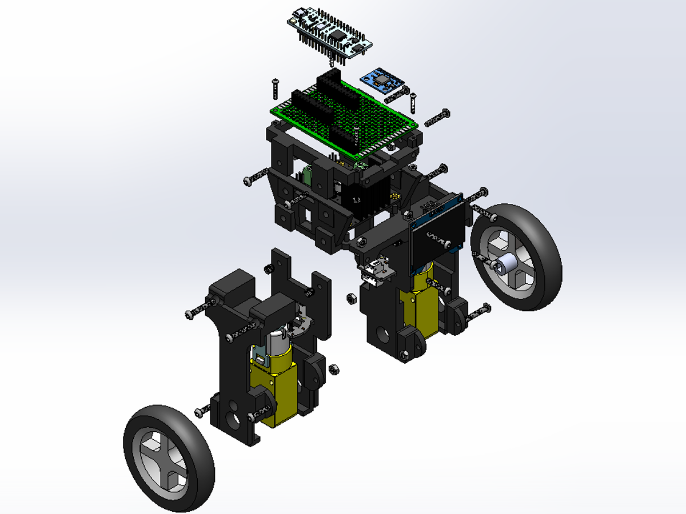
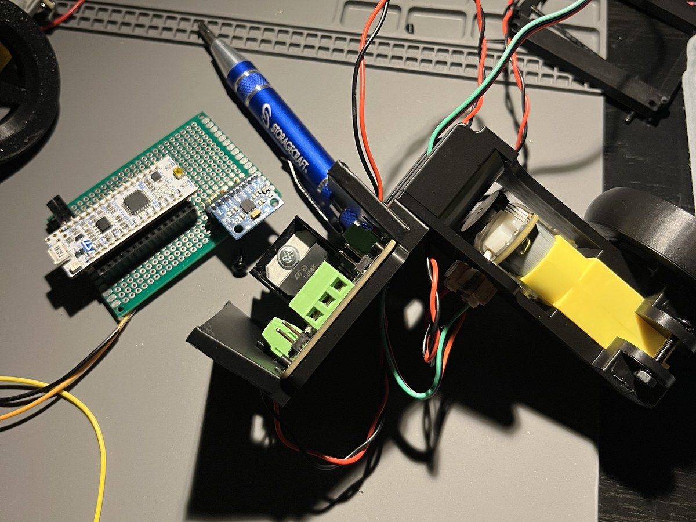
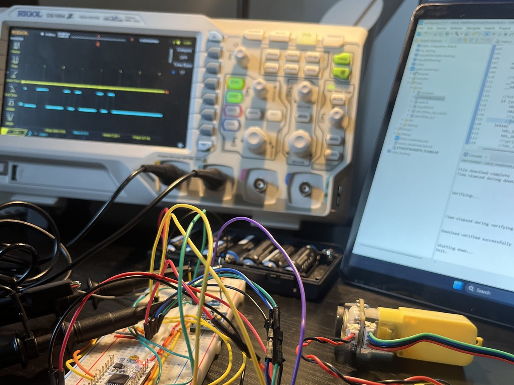
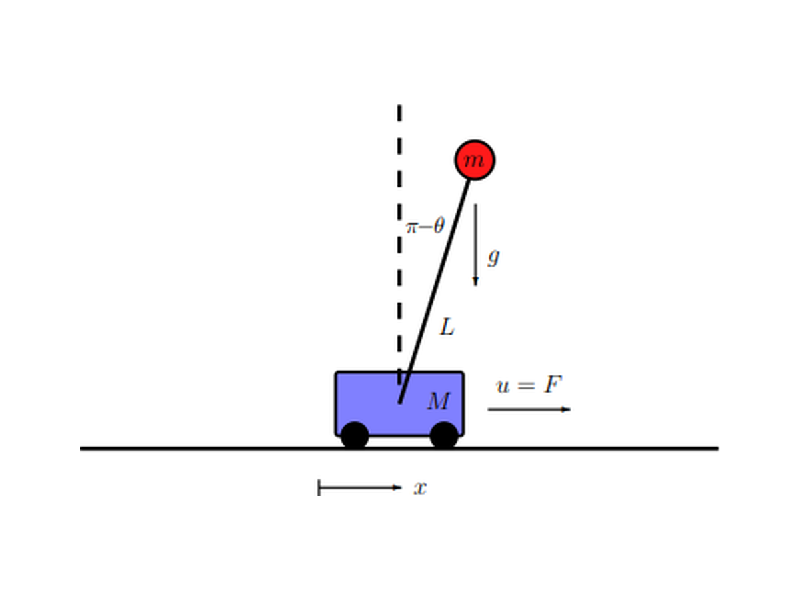
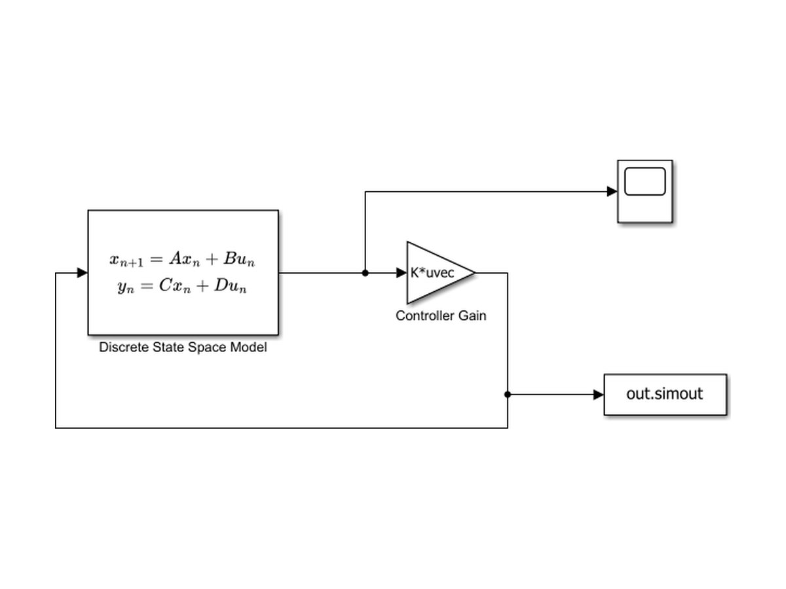
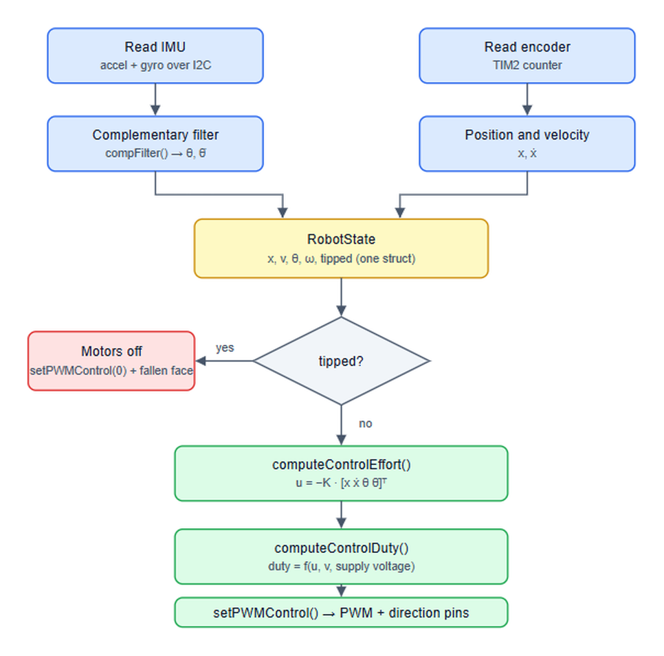

Edmond: Self-Balancing Robot
STM32 inverted pendulum with LQR control
Edmond is a two-wheeled inverted-pendulum robot built around an STM32F303K8. He balances with a discrete LQR controller I designed in MATLAB/Simulink, using IMU and wheel encoder feedback, and his OLED face reacts when he falls.
I designed the controller, wrote the firmware in C on STM32 HAL, wired and debugged the electronics, and modeled the 3D-printed chassis in SolidWorks. View the code on GitHub →
- Role Solo project: controls, firmware, electronics, CAD When Summer 2026 - Present
- MCU STM32F303K8 (Cortex-M4F)
- Tools STM32CubeIDE, MATLAB/Simulink, SolidWorks
- Code github.com/marlongbs-git/balancing-bot-edmond




Highlights
- Balances unaided and recovers from pushes, with a discrete LQR controller on the full state [x, ẋ, θ, θ̇]
- Built the plant model from first principles: a cart-pendulum linearized about upright, discretized, and solved with
dlqrin MATLAB - Pulled real masses, center of mass, and inertia from SolidWorks mass properties instead of guessing them
- Fused MPU6050 accelerometer and gyro data with a complementary filter, and combined it with quadrature encoder data each control cycle
- Converted controller force into motor duty cycle with an electrical motor model that accounts for torque, back-EMF, and supply voltage
- Wrote modular C firmware on STM32 HAL: IMU driver, encoders, state estimation, control, and an OLED face that only redraws on state changes
How It Works

1. Modeling the plant
I modeled Edmond as a cart-pendulum: the wheels are the cart, and the body is the pendulum. I linearized the equations of motion about upright and filled in the real physical parameters from the SolidWorks mass-properties report.

2. LQR design and simulation
I discretized the model and designed the gain matrix with dlqr, then simulated the closed loop in Simulink before touching hardware.
The Q matrix weights tilt angle and angular rate far above wheel position, so Edmond prioritizes staying upright. R penalizes motor effort to keep the motors out of saturation.

3. The control loop
Every cycle, the firmware reads the IMU over I2C and fuses it with a complementary filter to get pitch and pitch rate. It reads the encoder timer for wheel position and velocity and packs everything into one RobotState struct.
If Edmond has tipped past the threshold, the motors cut out and the OLED shows a fallen face. Otherwise the firmware computes u = −Kx, converts that force to a PWM duty cycle with the motor model and supply voltage, and drives the H-bridge.
4. Bring-up and debugging
I brought the electronics up on a breadboard first, probing the bus with an oscilloscope. The IMU and OLED share one I2C bus, and loose connectors caused intermittent failures. That taught me a silent read failure is worse than a loud one. I added a bus-recovery routine and soldered the final build onto perfboard.
Other lessons came straight from the hardware. A degrees-versus-radians mismatch is the fastest way to saturate a motor, and deadband, back-EMF spikes, and the power supply all show up in the control loop.
5. Mechanical design
The PLA chassis has two motor legs and an upper deck carrying the soldered Nucleo and IMU board, the motor driver, and the OLED face. I designed it in SolidWorks, which also gave the controller its physical parameters.
Next
An extended Kalman filter for attitude estimation, battery power, and a custom PCB to replace the hand-wired electronics.
Skills Used
Control Theory
State-space modeling, linearization, discretization, and discrete LQR design in MATLAB/Simulink.
Embedded Firmware
Modular C on STM32 HAL: I2C drivers, encoder timers, PWM motor control, sensor fusion.
Hardware Debugging
I2C bus failures and recovery, motor deadband, and power supply issues on a live control loop.